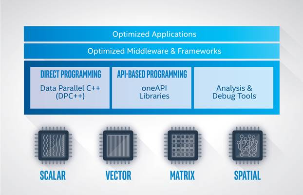

Introduction¶
Obtaining high compute performance on today’s modern computer architectures requires code that is optimized, power efficient, and scalable. The demand for high performance continues to increase due to needs in AI, video analytics, data analytics, as well as in traditional high performance computing (HPC).
Modern workload diversity has resulted in a need for architectural diversity; no single architecture is best for every workload. A mix of scalar, vector, matrix, and spatial (SVMS) architectures deployed in CPU, GPU, AI, and FPGA accelerators is required to extract the needed performance.
Today, coding for CPUs and accelerators requires different languages, libraries, and tools. That means each hardware platform requires completely separate software investments and provides limited application code reusability across different target architectures.
The oneAPI programming model simplifies the programming of CPUs and accelerators using modern C++ features to express parallelism with a programming language called Data Parallel C++ (DPC++). The DPC++ language enables code reuse for the host (such as a CPU) and accelerators (such as a GPU) using a single source language, with execution and memory dependencies clearly communicated. Mapping within the DPC++ code can be used to transition the application to run on the hardware, or set of hardware, that best accelerates the workload. A host is available to simplify development and debugging of device code, even on platforms that do not have an accelerator available.
Note
Not all programs can benefit from the single programming model offered by oneAPI. It is important to understand if your program can benefit and how to design, implement, and use the oneAPI programming model for your program.
Overview¶
The oneAPI programming model provides a comprehensive and unified portfolio of developer tools that can be used across hardware targets, including a range of performance libraries spanning several workload domains. The libraries include functions custom-coded for each target architecture, so the same function call delivers optimized performance across supported architectures. DPC++ is based on industry standards and open specifications to encourage ecosystem collaboration and innovation.

As shown in the figure above, applications that take advantage of the oneAPI programming model can execute on multiple target hardware platforms ranging from CPU to FPGA.
Data Parallel C++ (DPC++)¶
Data Parallel C++ (DPC++) is a high-level language designed for data parallel programming productivity. It is based on C++ for broad compatibility and uses common, familiar C and C++ constructs. The language seeks to deliver performance on par with other compiled languages, such as standard C++ compiled code, and uses C++ class libraries to allow the compiler to interpret the code and run on various supported architectures.
DPC++ is based on SYCL* from the Khronos* Group to support data parallelism and heterogeneous programming. In addition, Intel is pursuing extensions to SYCL with the aim of providing value to customer code and working with the standards organization for adoption. For instance, the DPC++ language includes an implementation of unified shared memory to ease memory usage between the host and the accelerators. These features are being driven into a future version of the SYCL language. For more details about SYCL, refer to version 1.2.1 of the SYCL Specification.
While DPC++ applications can run on any supported target hardware, tuning is required to gain the best performance advantage on a given target architecture. For example, code tuned for a CPU likely will not run as fast on a GPU accelerator without modification. This guide aims to help developers understand how to program using the oneAPI programming model and how to target and optimize for the appropriate architecture to achieve optimal application performance.